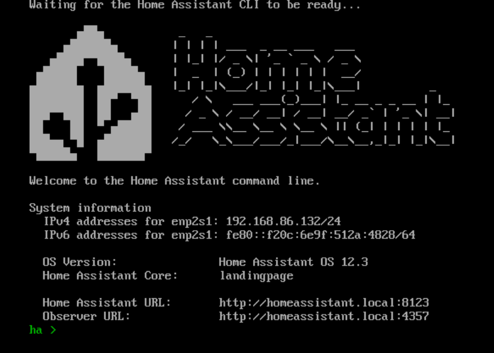

2024-05-12
home-assistant
修改于: 2024-05-12MacOS虚拟机安装
参考官网安装文档: https://www.home-assistant.io/installation/macos#install-home-assistant-core
- 下载虚拟机文件:
- 如果用的是 virtual-box, 下载 https://github.com/home-assistant/operating-system/releases/download/12.3/haos_ova-12.3.vdi.zip (截止目前的最新版)
- 如果是 vmware, 下载 https://github.com/home-assistant/operating-system/releases/download/12.3/haos_ova-12.3.vmdk.zip
我用的是 vmdk, 下载好后解压, 然后双击, 会自动用 Vmware Fusion 打开
固件类型选择 UEFI
磁盘选择已经存在的磁盘文件, 就是选择刚刚解压的 vmdk 文件.
安装好启动后大致是这样子

然后按照提示给的地址, 在宿主机浏览器打开:
homeassistant.local:8123 homeassistant:8123 http://X.X.X.X:8123 # X.X.X.X 为虚拟机的IP, 我这里就是 http://192.168.86.132:8123
第一次启动, 会下载一些必要的文件
有个比较坑的地方是, 如果第一次下载东西失败了, 没有重试入口, 只有删除了虚拟机重新开始
完成后的页面
待续...
Docker安装
参考: Install Home Assistant Container
注解
官网给的 compose 配置
version: '3'
services:
homeassistant:
container_name: homeassistant
image: "ghcr.io/home-assistant/home-assistant:stable"
volumes:
- /PATH_TO_YOUR_CONFIG:/config
- /etc/localtime:/etc/localtime:ro
- /run/dbus:/run/dbus:ro
restart: unless-stopped
privileged: true
network_mode: host
下载镜像(可以不用...)
docker pull home-assistant/home-assistant:stable
直接命令行启动
docker run --restart always -d --name homeassistant -v /PATH_TO_YOUR_CONFIG:/config --device=/PATH_TO_YOUR_USB_STICK -e TZ=Asia/Shanghai --net=host ghcr.io/home-assistant/home-assistant:stable
# docker run --restart always -d --name homeassistant -v /PATH_TO_YOUR_CONFIG:/config --device=/PATH_TO_YOUR_USB_STICK -e TZ=Australia/Melbourne --net=host ghcr.io/home-assistant/home-assistant:stable
# Replace /PATH_TO_YOUR_CONFIG points at the folder where you want to store your configuration - make sure that you keep the :/config part
# Replace /PATH_TO_YOUR_USB_STICK matches the path for your USB stick (e.g., /dev/ttyACM0 for most Synology users)
# Replace “Australia/Melbourne” with your timezone (see https://en.wikipedia.org/wiki/List_of_tz_database_time_zones )
# 启动后访问: http://192.xxx.xxx.xxx:8123
注解
使用 极空间 的docker安装时, 因为 8123 端口默认已经被占用了, 所以需要第一次启动失败时, 修改配置 configuration.yaml, 增加端口配置
http:
# 重新设置端口号
server_port: 18123
极空间 安装可参考: https://www.molingran.com/p/zspace-home-assistant/